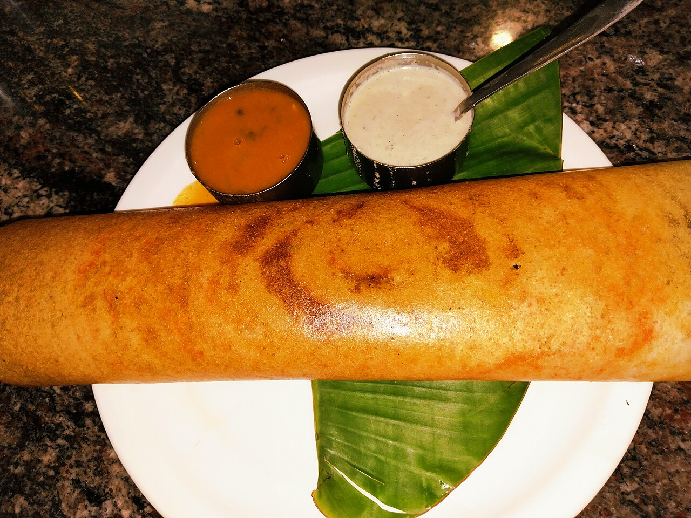

Masala Dosa

Description
Veg fried rice is a popular dish made with cooked rice, fresh vegetables,
and simple spices. It is quick to prepare and makes a delicious meal.
Ingredients
- 2 cups cooked rice
- 1/2 cup chopped carrots
- 1/2 cup chopped capsicum
- 1/4 cup chopped beans
- 2 tablespoons oil
- 2 tablespoons chopped spring onions
- 1 tablespoon soy sauce
- Salt and pepper to taste
Steps
- Heat oil in a pan.
- Add the chopped vegetables and cook for a few minutes.
- Add soy sauce, salt, and pepper.
- Add the cooked rice and mix everything well.
- Cook for another 2-3 minutes.
- Garnish with spring onions and serve hot.
Home